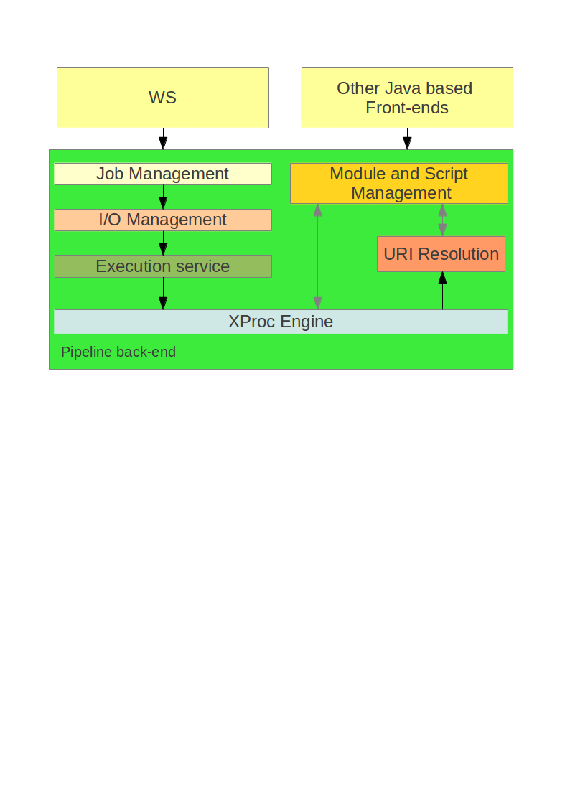

DAISY Pipeline 2
Internal architecture and technical details
February 17, 2011 - Javier Asensio
February 17, 2011 - Javier Asensio
Our aims:
Adoption of existing standards relaying on:
OSGI is a java module system and service platform according to the wikipedia
The reasons/benefits for using OSGI are:
Image from Apache felix site
Simple scenario - Messaging system
public interface MessageService{
public List getUnreadMessages();
}
[...]
for(MessageServices service:this.getTrackedServices()){
DesktopNotfier.notifyMessages(service.getUnreadMessages());
}
[...]
Services can be declared or queried programmatically using the OSGI API.
But we can also declare them in a xml file and let the framework deal with the hassle for us
<?xml version="1.0" encoding="UTF-8"?>
<scr:component xmlns:scr="http://www.osgi.org/xmlns/scr/v1.1.0" name="hello-service">
<implementation class="org.daisy.pipeline.salutations.FrenchHello"/>
<service>
<provide interface="org.daisy.pipeline.core.HelloService"/>
</service>
</scr:component>

XProc defines three different types of steps:
The basic elements of an XProc steps are:
<p:declare-step xmlns:p="http://www.w3.org/ns/xproc" name="validate-and-transform">
<p:input port="source" primary="true"/>
<p:output port="result" primary="true">
<p:pipe step="transformation" port="result"/>
</p:output>
<p:validate-with-xml-schema name="validation">
<p:input port="source">
<p:pipe step="validate-and-transform" port="source"/>
</p:input>
<p:input port="schema">
<p:document href="v1schema.xsd"/>
</p:input>
</p:validate-with-xml-schema>
<p:xslt name="transformation">
<p:input port="stylesheet">
<p:document href="stylesheet.xsl"/>
</p:input>
</p:xslt>
</p:declare-step>
The big picture
A daisy pipeline module is a set of resources bundled under a common name
This is what you need to create a daisy module:
* DISCLAIMER: 1,2,3 will be merged soon!
Catalog example
<catalog xmlns="urn:oasis:names:tc:entity:xmlns:xml:catalog">
<uri name="http://www.daisy.org/pipeline/modules/dtbook-to-zedai/dtbook-to-zedai.xpl" uri="../dtbook-to-zedai/dtbook-to-zedai.xpl"/>
<uri name="http://www.daisy.org/pipeline/modules/dtbook-to-zedai/dtbook-to-zedai.load.xpl" uri="../dtbook-to-zedai/dtbook-to-zedai.load.xpl"/>
<uri name="http://www.daisy.org/pipeline/modules/dtbook-to-zedai/dtbook-to-zedai.convert.xpl" uri="../dtbook-to-zedai/dtbook-to-zedai.convert.xpl"/>
<uri name="http://www.daisy.org/pipeline/modules/dtbook-to-zedai/dtbook-to-zedai.store.xpl" uri="../dtbook-to-zedai/dtbook-to-zedai.store.xpl"/>
</catalog>
MANIFEST.MF
Manifest-Version: 1.0
Bundle-ManifestVersion: 2
Bundle-Name: dtbook-to-zedai
#Module name
Bundle-SymbolicName: org.daisy.pipeline.modules.dtbook-to-zedai
#long name
Bundle-Version: 1.0.1.qualifier
#dependencies
Require-Bundle: org.daisy.pipeline.modules.metadata-utils,
org.daisy.pipeline.modules.dtbook-utils,
org.daisy.pipeline.modules.file-utils
A daisy pipeline script is an extended xproc step, where:
$ dp2 help dtbook-to-zedai
Usage: dp2 dtbook-to-zedai [options]
--i-source input
Desc:One or more DTBook files to be transformed. In the case of multiple files, a merge will be performed.
Media type:application/x-dtbook+xml
Sequence allowed:
...
Main steps:
Important script documentation
<p:declare-step version="1.0" name="dtbook-to-zedai" type="px:dtbook-to-zedai" >
<p:documentation>
<xd:short>dtbook-to-zedai</xd:short>
<xd:detail>Transforms DTBook XML into ZedAI XML.</xd:detail>
<xd:homepage>http://code.google.com/p/daisy-pipeline/wiki/DTBookToZedAI</xd:homepage>
<xd:author>
<xd:name>Marisa DeMeglio</xd:name>
<xd:mailto>marisa.demeglio@gmail.com</xd:mailto>
<xd:organization>DAISY</xd:organization>
</xd:author>
</p:documentation>
[...]
Input ports:
<p:input port="source" primary="true" sequence="true" px:media-type="application/x-dtbook+xml">
<p:documentation>
<xd:short>DTBook file(s)</xd:short>
<xd:detail>One or more DTBook files to be transformed. In the case of multiple files, a merge will be performed.</xd:detail>
</p:documentation>
</p:input>
Options metadata:
<p:option name="opt-output-dir" required="true" px:dir="output" px:type="anyDirURI">
<p:documentation>
<xd:short>Output directory</xd:short>
<xd:detail>The directory to store the generated files in.</xd:detail>
</p:documentation>
</p:option>
OSGI-INF/dtbook-to-zedai.xml
<scr:component xmlns:scr="http://www.osgi.org/xmlns/scr/v1.1.0" name="dtbook-to-zedai">
<implementation class="org.daisy.pipeline.script.XProcScriptService"/>
<service>
<provide interface="org.daisy.pipeline.script.XProcScriptService"/>
</service>
<property name="script.name" type="String" value="dtbook-to-zedai"/>
<property name="script.description" type="String" value="Convert DTBook XML to ZedAI XML"/>
<property name="script.url" type="String" value="http://www.daisy.org/pipeline/modules/dtbook-to-zedai/dtbook-to-zedai.xpl"/>
</scr:component>
META-INF/MANIFEST.MF
[...]
#Add these lines to publish your service
Import-Package: org.daisy.pipeline.script
Service-Component: OSGI-INF/dtbook-to-zedai.xml
Further readings:
/
#